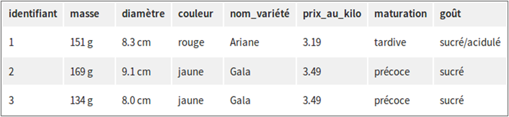
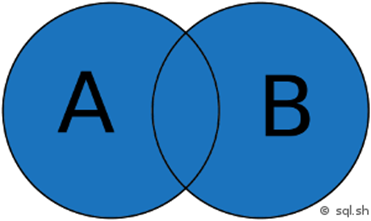
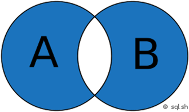
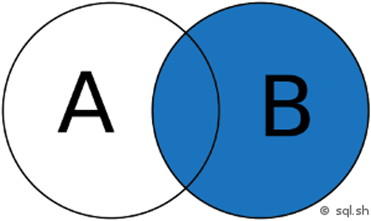
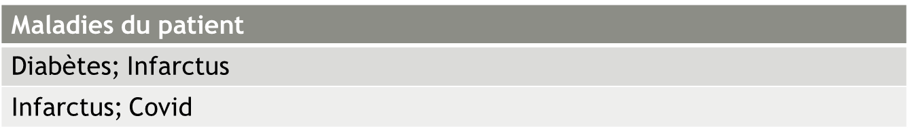
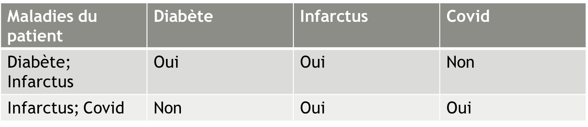

Thibaut FABACHER
GMRC
Perme d’interroger un logiciel sgbdr (système de gestion de base de données)
SGBR : MySQL, Oracle Database, SQLite…
! Différent SQL pour différente SGBR
| identifiant | masse | diamètre | couleur |
|---|---|---|---|
| 1 | 151 g | 8.3 cm | rouge |
| 3 | 169 g | 9.1 cm | jaune |
| 3 | 134g | 8.0 cm | jaune |
| libellé | prix_au_kilo | maturation | goût |
|---|---|---|---|
| Ariane | 3.19 | tardive | sucré/acidulé |
| Gala | 3.49 | précoce | sucré |
| Reinette | 3.19 | mi-saison | sucré |
| Boskoop | 2.99 | mi-saison | acidulé |
| […] | […] | […] | […] |
| identifiant | masse | diamètre | couleur | nom_variété |
|---|---|---|---|---|
| 14 | 142 g | 7.3 cm | rouge | Ariane |
| 25 | 182 g | 7.5 cm | rouge | Gala |
| 16 | 140 g | 7.9 cm | rouge | Ariane |
| […] | […] | […] | […] | […] |
Pas de redondance pour le stockage
| Opérateur | Teste si … |
|---|---|
| A = B | A égal à B |
| A <> B | A différent de B |
| A > B et A < B | A supérieur à B / A inférieur à B |
| A >= B et A <= B | A supérieur ou égal à B / A inférieur ou égal à B |
| A BETWEEN B AND C | A est compris entre B et C |
| A LIKE ‘chaîne de caractères’ | (nous verrons cet opérateur dans un prochain chapitre) |
| A IN (B1, B2, B3, etc.) | A est présent dans la liste (B1, B2, etc.) |
| A IS NULL | A n’a pas de valeur |
Restriction :
Opérateur disponible
Opérateur logique :
OR, AND, NOT
| id_livre | titre | isbn_10 | auteur | prix |
|---|---|---|---|---|
| 1 | Forteresse digitale | 2709626306 | Dan Brown | 20.5 |
| 2 | La jeune fille et la nuit | 2253237620 | Guillaume Musso | 21.9 |
| 3 | T’choupi se brosse les dents | 2092589547 | Thierry Courtin | 5.7 |
| 4 | La Dernière Chasse | 2226439412 | Jean-Christophe Grangé | 22.9 |
| 5 | Le Signal | 2226319484 | Maxime Chattam | 23.9 |
| id_livre | titre | isbn_10 | auteur | prix |
|---|---|---|---|---|
| 1 | Forteresse digitale | 2709626306 | Dan Brown | 20.5 |
| 2 | La jeune fille et la nuit | 2253237620 | Guillaume Musso | 21.9 |
| 3 | T’choupi se brosse les dents | 2092589547 | Thierry Courtin | 5.7 |
| 4 | La Dernière Chasse | 2226439412 | Jean-Christophe Grangé | 22.9 |
| 5 | Le Signal | 2226319484 | Maxime Chattam | 23.9 |
Quelle requête utiliser pour afficher l’ensemble des enregistrements de la table ?
| id_livre | titre | isbn_10 | auteur | prix |
|---|---|---|---|---|
| 1 | Forteresse digitale | 2709626306 | Dan Brown | 20.5 |
| 2 | La jeune fille et la nuit | 2253237620 | Guillaume Musso | 21.9 |
| 3 | T’choupi se brosse les dents | 2092589547 | Thierry Courtin | 5.7 |
| 4 | La Dernière Chasse | 2226439412 | Jean-Christophe Grangé | 22.9 |
| 5 | Le Signal | 2226319484 | Maxime Chattam | 23.9 |
Quelle requête utiliser pour sélectionner uniquement les livres qui ont un prix strictement supérieur à 20 ?
| id_livre | titre | isbn_10 | auteur | prix |
|---|---|---|---|---|
| 1 | Forteresse digitale | 2709626306 | Dan Brown | 20.5 |
| 2 | La jeune fille et la nuit | 2253237620 | Guillaume Musso | 21.9 |
| 3 | T’choupi se brosse les dents | 2092589547 | Thierry Courtin | 5.7 |
| 4 | La Dernière Chasse | 2226439412 | Jean-Christophe Grangé | 22.9 |
| 5 | Le Signal | 2226319484 | Maxime Chattam | 23.9 |
Quelle requête utiliser pour récupérer les livres de la table qui ont un prix compris entre 20 et 22 ?
Inner join
Left Join



| id_etudiant | prenom | nom |
|---|---|---|
| 30 | Joseph | Biblo |
| 31 | Paul | Bismuth |
| 32 | Jean | Michel |
| 33 | Ted | Bundy |
| 34 | Caroline | Martinez |
| 35 | Joséphine | Henry |
| id | id_examen | id_etudiant | matiere | note |
|---|---|---|---|---|
| 788 | 45 | 30 | Histoire-Geographie | 10.5 |
| 789 | 87 | 33 | Mathématiques | 14 |
| 790 | 87 | 34 | Mathématiques | 4 |
| 791 | 45 | 31 | Histoire-Geographie | 15.5 |
| 792 | 45 | 32 | Histoire-Geographie | 8 |
| 793 | 87 | 31 | Mathématiques | 14 |
| id_etudiant | prenom | nom |
|---|---|---|
| 30 | Joseph | Biblo |
| 31 | Paul | Bismuth |
| 32 | Jean | Michel |
| 33 | Ted | Bundy |
| 34 | Caroline | Martinez |
| 35 | Joséphine | Henry |
| id | id_examen | id_etudiant | matiere | note |
|---|---|---|---|---|
| 788 | 45 | 30 | Histoire-Geographie | 10.5 |
| 789 | 87 | 33 | Mathématiques | 14 |
| 790 | 87 | 34 | Mathématiques | 4 |
| 791 | 45 | 31 | Histoire-Geographie | 15.5 |
| 792 | 45 | 32 | Histoire-Geographie | 8 |
| 793 | 87 | 31 | Mathématiques | 14 |
Quelle requête utiliser pour afficher tous les enregistrement de la table examens avec en plus, si c’est possible, le prenom et le nom de l’étudiant ?
| id_etudiant | prenom | nom |
|---|---|---|
| 30 | Joseph | Biblo |
| 31 | Paul | Bismuth |
| 32 | Jean | Michel |
| 33 | Ted | Bundy |
| 34 | Caroline | Martinez |
| 35 | Joséphine | Henry |
| id | id_examen | id_etudiant | matiere | note |
|---|---|---|---|---|
| 788 | 45 | 30 | Histoire-Geographie | 10.5 |
| 789 | 87 | 33 | Mathématiques | 14 |
| 790 | 87 | 34 | Mathématiques | 4 |
| 791 | 45 | 31 | Histoire-Geographie | 15.5 |
| 792 | 45 | 32 | Histoire-Geographie | 8 |
| 793 | 87 | 31 | Mathématiques | 14 |
Quelle requête utiliser pour afficher les résultats d’histoire des étudiants qui ont un resultats ?
Les données sont des valeurs de variables quantitatives ou qualitatives appartenant à un ensemble de sujet.
1 Individu par ligne
Redondance d’information
Nécessité de croiser des tables d’origine
En minuscule
Sans accent
Pas de doublons
Débutent pas une lettre
Brutes : pas d’unité
Descriptive: Vrai/faux, oui/non , 1/0
Une donnée par variables
Homogène : attention à la casse
Données brutes ▶️ tidy
L’idéal : un script R/python
En entrée les données brutes
En sortie les données propre
Préciser les étapes supplémentaires dans ce script
'data.frame': 32 obs. of 11 variables:
$ mpg : num 21 21 22.8 21.4 18.7 18.1 14.3 24.4 22.8 19.2 ...
$ cyl : num 6 6 4 6 8 6 8 4 4 6 ...
$ disp: num 160 160 108 258 360 ...
$ hp : num 110 110 93 110 175 105 245 62 95 123 ...
$ drat: num 3.9 3.9 3.85 3.08 3.15 2.76 3.21 3.69 3.92 3.92 ...
$ wt : num 2.62 2.88 2.32 3.21 3.44 ...
$ qsec: num 16.5 17 18.6 19.4 17 ...
$ vs : num 0 0 1 1 0 1 0 1 1 1 ...
$ am : num 1 1 1 0 0 0 0 0 0 0 ...
$ gear: num 4 4 4 3 3 3 3 4 4 4 ...
$ carb: num 4 4 1 1 2 1 4 2 2 4 ...Différents types de variables : - Quantitatives
Qualitatives
Dates
Texte Libre
Stockées sous un format numérique
Discrètes ou continues
Possibilité de convertir de «character» à numérique :
❗Questions à choix multiples dans un questionnaire
Peuvent toujours être séparées en n variables binaires (n = nombre de modalités)
❗❗❗❗❗❗❗❗❗❗❗❗❗❗
Format anglais : mois/jour/année
Format Français : jour/mois/année
Stockées sous forme de nombre par rapport à une date 1er janvier 1900 dans excel
tibble [36 x 10] (S3: tbl_df/tbl/data.frame)
$ ID de la réponse : num [1:36] 45 46 47 48 49 50 51 52 53 54 ...
$ Date de soumission : chr [1:36] "2021-07-19 21:16:11" "2021-07-19 21:31:35" "2021-07-19 21:47:58" "2021-07-19 22:04:06" ...
$ Dernière page : num [1:36] 2 2 2 2 NA 2 2 2 2 2 ...
$ Langue de départ : chr [1:36] "fr" "fr" "fr" "fr" ...
$ Tête de série : num [1:36] 4.88e+08 1.86e+09 2.10e+09 1.67e+09 1.97e+09 ...
$ Date de lancement : chr [1:36] "2021-07-19 20:57:49" "2021-07-19 21:18:42" "2021-07-19 21:36:48" "2021-07-19 21:54:21" ...
$ Date de la dernière action: chr [1:36] "2021-07-19 21:16:11" "2021-07-19 21:31:35" "2021-07-19 21:47:58" "2021-07-19 22:04:06" ...
$ ...8 : logi [1:36] NA NA NA NA NA NA ...
$ ID : : num [1:36] 30 NA 32 33 NA 34 35 36 37 39 ...
$ Sexe du medcin traitant : chr [1:36] "Féminin" "Féminin" "Masculin" "Féminin" ...# A tibble: 6 x 45
`ID de la réponse` `Date de soumission` `Dernière page` `Langue de départ`
<dbl> <chr> <dbl> <chr>
1 45 2021-07-19 21:16:11 2 fr
2 46 2021-07-19 21:31:35 2 fr
3 47 2021-07-19 21:47:58 2 fr
4 48 2021-07-19 22:04:06 2 fr
5 49 <NA> NA fr
6 50 2021-07-27 18:57:00 2 fr
# ... with 41 more variables: `Tête de série` <dbl>, `Date de lancement` <chr>,
# `Date de la dernière action` <chr>, ...8 <lgl>, `ID :` <dbl>,
# `Sexe du medcin traitant` <chr>, `Date de la première consultation` <chr>,
# `Délais de prise en charge (mois)` <chr>, `Délais de RDV (mois)` <dbl>,
# `Medecin adresseur` <chr>, `Pathologie lié au travail ? [AT]` <chr>,
# `Pathologie lié au travail ? [Commentaire]...16` <dbl>,
# `Pathologie lié au travail ? [AT non reconnu]` <chr>, ... [1] "Non" "Non" "Non" "Non" NA "Non" "Non" "Non" "Non" "Non" "Non" "Non"
[13] "Non" "Non" "Non" "Non" "Non" "Non" "Non" "Non" "Non" "Non" "Non" "Non"
[25] "Non" "Non" "Non" "Non" "Non" "Non" "Non" "Non" "Non" "Non" "Non" "Non"# A tibble: 36 x 1
`ID de la réponse`
<dbl>
1 45
2 46
3 47
4 48
5 49
6 50
7 51
8 52
9 53
10 54
# ... with 26 more rows [1] FALSE FALSE FALSE FALSE FALSE FALSE FALSE FALSE FALSE FALSE FALSE FALSE
[13] FALSE FALSE FALSE FALSE FALSE FALSE FALSE FALSE FALSE FALSE FALSE FALSE
[25] FALSE FALSE FALSE FALSE FALSE FALSE FALSE FALSE FALSE FALSE FALSE FALSE
[37] FALSE FALSE FALSE FALSE FALSE FALSE FALSE FALSE FALSEdata1$Sexe.du.medcin.traitant<- as.character(data1$Sexe.du.medcin.traitant)
data1<-data1%>%
mutate(Sexe.du.medcin.traitant =
case_when(Sexe.du.medcin.traitant==45~NA_character_,
Sexe.du.medcin.traitant=="f"~"Féminin",
Sexe.du.medcin.traitant=="m"~"Masculin",
TRUE ~Sexe.du.medcin.traitant)%>%as.factor)Master Intelligence des données de santé / UE Technique
Comment mettre en forme des données ?
Notion de tidy data :